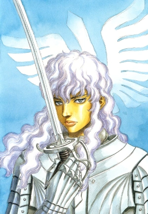
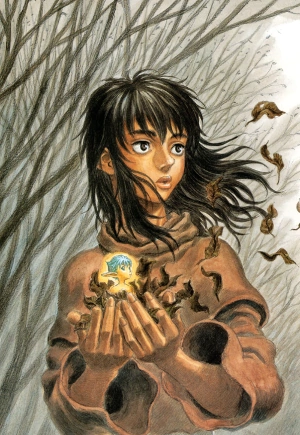
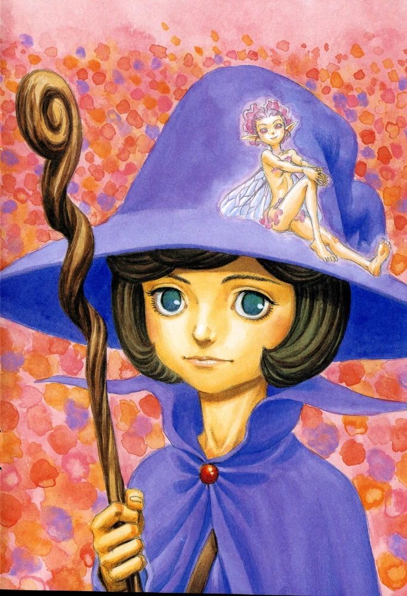
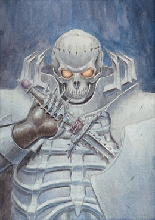
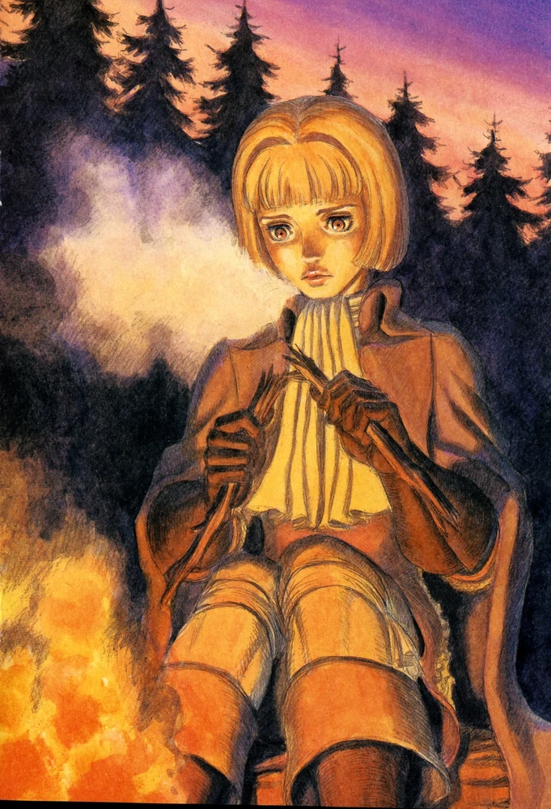

Guts, renowned as the "Black Swordsman", is a former mercenary and branded wanderer who travels the world in a constant internal struggle between pursuing his own ends and upholding his attachments to those dear to him.

Griffith is the current leader of the reborn Band of the Falcon and supreme commander of the Midland Regular Army. Having been at the fore of many battles, he has amassed a reputation as a savior across the continent, and is revered as the "Falcon of Light".

Casca was the only female soldier in the original Band of the Hawk and is behind only to Guts and Griffith in swordsmanship. Her ambivalent relationship to both of them makes her moody and capricious. Casca joins the Band of the Hawk after Griffith saves her from attack by a nobleman.

Schierke is a young witch-in-training, a disciple of the witch Flora. She is accompanied by an elf, Evarella. She aided Guts's group with a troll infestation in the nearby village Enoch, where she showed how powerful magic can be in Berserk.

The Skull Knight is one of the most mysterious and prolific characters introduced in Berserk, a towering warrior dressed in full armor whose ornaments, especially his helmet, are shaped as parts of a human skeleton, hence his moniker, who rides a massive, ghostly black horse.

Farnese is a noblewoman who led the Holy See's ceremonial guard, the Holy Iron Chain Knights. Since this position has been traditionally held by a woman, Farnese was appointed during her stay at the convent she was sent to by her father, Federico Vandimion.